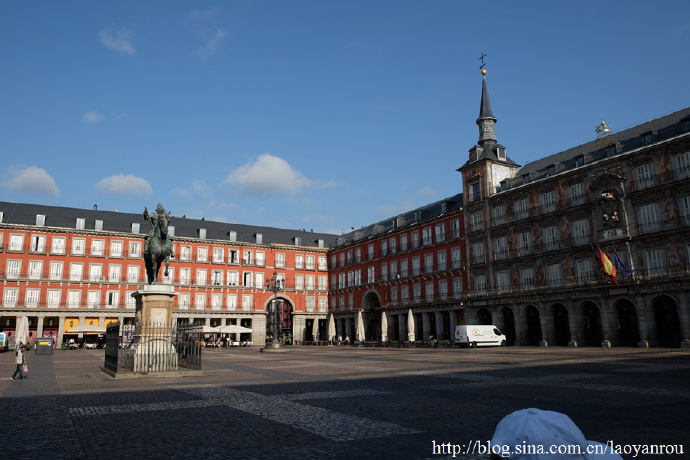
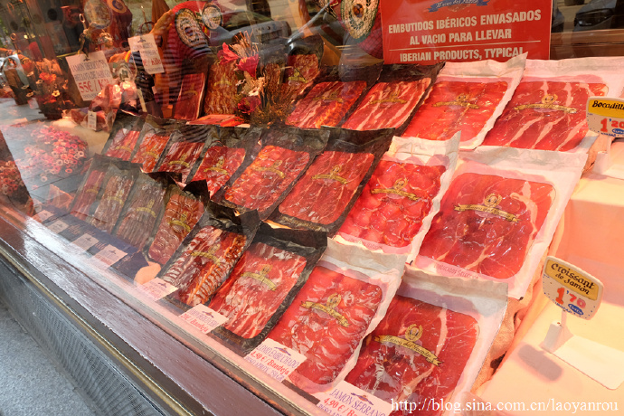
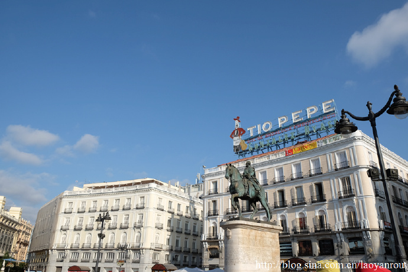
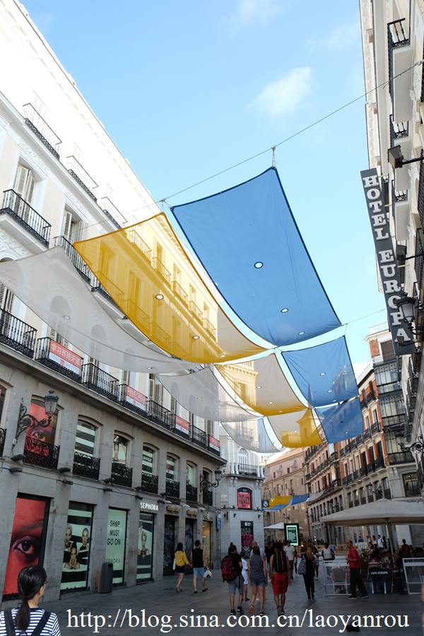

欧游札记之火舞西班牙（Day14-15马德里——普拉多博物馆——马约尔广场——太阳门广场）

Day14-15 马德里——普拉多博物馆——马约尔广场——太阳门广场
尽管马德里贵为西班牙首都，但相比巴塞罗那来说却差了一个高迪那样难以逾越的距离，如果没有欧洲顶尖的普拉多博物馆为其撑场，估计艺术颜面难存。我们为普拉多足足预留了一天参观时间，因为博物馆实在太大，近年在旧馆比利亚努埃瓦馆的基础上新建了海罗尼莫斯新馆，总共收藏了三万多件绘画及雕刻作品，其中尤以西班牙王室的300多件美术藏品为精华。博物馆珍藏艺术品主要包括12-19世纪西班牙、意大利及法国绘画，其中格列柯、委拉斯凯兹及戈雅三大巨匠的作品不可错过，出生于西班牙塞维利亚的本土画家委拉斯凯兹的名作《宫娥》几乎独占了一个展厅的正中间位置，描绘了画家给腓力四世夫妇作画时宫女给小公主玛格丽特贡献食物的场景，是一幅颇具生活情趣的宫廷生活绘画，据说毕加索观摩此画后激起了强烈的创作欲望，创作了以宫娥为名的一系列抽象派作品多达58幅！我们有幸在巴塞罗那毕加索博物馆欣赏过这些作品，毕加索对原作的临摹和解构简直是匪夷所思，除了基本构图，人物面目全非，根本看不出来是临摹委拉斯凯兹的这幅画，除此以外，西班牙超现实主义大师达利也曾临摹过《宫娥》，甚至还有人进一步临摹了毕加索《宫娥》创作了《毕加索的宫娥》，简直要把这幅画给恶搞“玩坏”了。可想而知此画对近现代艺术大师的影响之深，不愧为普拉多博物馆的镇馆之宝。
戈雅两幅名作《着衣的玛哈》和《脱衣的玛哈》其实描绘的是同一个西班牙交际名媛穿衣和裸体的两个状态，画裸体是当时比较禁忌的作品题材，但戈雅却将裸和不裸两个状态都画出来形成对比，似乎想告诉人们其实两者并无区别，衣服再华美也只是一块遮羞布而已，其内里和本质是一样的。作为宫廷画家活跃在画坛，戈雅一直到晚年仍创作了很多深层剖析人类本质的作品，拉开了近代绘画史的大幕。
另一位希腊籍绘画大师格列柯几乎半生时间都在西班牙托莱多度过，他创作的《牧羊人的崇拜》代表了他独树一帜的宗教画风格，用极细长的线条勾勒出变形的人体和独特光线，营造出一种神秘且深奥的宗教氛围，引人深思。
尼德兰艺术大师博斯的橡木板三联画《人间乐园》也是普拉多博物馆吸睛之作，甚至只要朝着人潮聚集的地方走就能找到此画，左翼、中间及右翼三幅画分别描绘了亚当夏娃伊甸园、人间乐园和炼狱的三个场景，象征人类无可救药的堕落，重演人类祖先亚当和夏娃的原罪悲剧，最后只能走向地狱。尤其是中间《人间乐园》背景是各种稀奇古怪的动物和奇花异草，前景是赤身裸体的各类男女与花草水果混在一起做些莫名其妙的事情，代表人间生活和荒唐的欲望，画风异常奇幻诡异，令人印象非常深刻，号称是西方美术史上最富神秘色彩，最难以解读的作品之一。
由于博物馆无法照相，很多佳作也只能匆匆一眼掠过，无法留下更深刻的记忆。所以建议在参观前尽量做足功课，才能从容不迫游刃有余地欣赏到更多更精彩的作品，不留下任何遗憾。
结束了普拉多博物馆的参观，剩下了一些边角料时间，我们简单逛了一下马德里的英国宫等大型百货商场买了些手信，顺路到四周被赭红色三层建筑所包围的马约尔广场与腓力三世雕像来了个合影，再到、太阳门广场与马德里标志熊抱树雕像亲密接触，意兴阑珊地结束了整个西班牙之旅，虽然时间有限未能尽览西班牙全貌尤其是西北部巴斯克地区，留下了些许遗憾，但客观说基本将最精华的巴塞罗那地区、安达卢西亚地区和马德里地区一次性游览完，已经是不虚此行，心满意足了，剩下的遗憾期待不久的将来等圣家堂建成后再故地重游时弥补吧！



